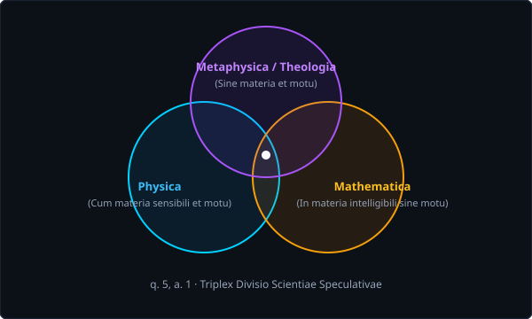

Metaphysics Book VII, Lecture 10 — On Parts of the Form vs. Parts of Matter: Bronze Circle and Mathematical Circle in Intelligible Matter¶
In VII Metaphysicorum, Lectio 10 — De partibus speciei et materiae: circulus aeneus et circulus mathematicus in materia intelligibili

[lib. 7 l. 10 n. 1 · Marietti #1482] Because the solution set forth above was not in every respect manifest—for he had not yet shown how parts are prior and posterior, nor again had he distinguished the universal composite from the particular, nor even the species from the form—he therefore here explains in detail the solution set forth above. Now this text is divided into two parts. In the first, he explains the solution set forth above; in the second, he teaches how it is to be applied to the question, where he says, One must meet the interrogation, however. The first is divided into two. First, he solves the question with respect to what was asked concerning the priority of parts; second, with respect to what was asked concerning whether the parts of the thing defined enter into the definition, where he says, But the parts of the formula. The first is divided into two. First, he shows how parts are prior to the whole; second, he makes this manifest by an example, where he says, Since, however. First, therefore, he says that what was stated above in the proposed solution is indeed true in itself, yet must be repeated so that what was said may become more manifest. For it is necessary that the parts of the formula, and those into which the formula is divided, be prior to the thing defined—either all of them or some of them. And this is said because parts of the form sometimes belong not to the necessity of the species, but to its perfection; just as sight and hearing, which are parts of the sensitive soul, do not belong to the integrity or necessity of an animal, for there can be an animal without these senses, yet they belong to the perfection of an animal, because a perfect animal possesses these senses as well. And thus it is universally true that those parts which are placed in the definition of anything are universally prior to it.
[lib. 7 l. 10 n. 2 · Marietti #1483] Yet an acute angle, although it is a part of a right angle, is nevertheless not placed in its definition, but conversely; for the formula of a right angle is not resolved into the definition of an acute angle, but conversely. For one who defines an acute angle uses the right angle in defining it, since an acute angle is an angle less than a right angle. And it is similar with the circle and the semicircle, which is defined through the circle, for it is the half part of a circle. It is similar also with the finger and man, since man is placed in the definition of a finger; for a finger is defined as being such a part of a man. For it was said above that the parts of the form are parts of the formula, whereas the parts of the matter are not. If, therefore, only the parts of the formula are prior, and not those of the matter, it follows that whatever parts belong to the thing defined as matter—namely that into which the thing defined, as a composite, is resolved as into its material principles—are posterior. Whatever, on the other hand, are parts of the formula and of the substance that is according to the formula, that is, parts of the form from which the intelligible account of the thing is taken, are prior to the whole, either all of them or some of them, for the reason stated above.
[lib. 7 l. 10 n. 3 · Marietti #1484] Next, when he says, Since, however, he expounds what he had said through examples, saying that since the soul of animals is the substance of the animate being according to the formula, that is, the form of the animate being from which the animate being has its proper intelligible account, it is the substance, that is, the form and species, and the what-it-was-to-be for such a body, namely an organic one. For an organic body cannot be defined except through the soul; and accordingly the soul is called the what-it-was-to-be for such a body.
[lib. 7 l. 10 n. 4 · Marietti #1485] And that this is true is clear from the fact that if anyone rightly defines a part of any animal whatever, he cannot rightly define it except through its proper operation, as when it is said that the eye is the part of an animal whereby it sees. Now the operation itself of the parts does not exist without sense or motion or the other operations of the parts of the soul. And thus it is necessary that one who defines any part of the body make use of the soul.
[lib. 7 l. 10 n. 5 · Marietti #1486] And because this is so, it is necessary that its parts—namely those of the soul—be prior, either all of them, as in perfect animals, or some of them, as in imperfect animals, to the whole taken together, that is, to that which is composed of soul and body. And it is similar in each other case, because it is always necessary that the formal parts be prior to any composite whatever.
[lib. 7 l. 10 n. 6 · Marietti #1487] Yet the body and the parts of the body are posterior to this substance, namely the form, which is the soul, since the soul must be placed in its definition, as has already been said. And that which is divided into the parts of the body as into matter is not the substance itself, that is, the form, but the whole taken together, that is, the composite. It is clear, therefore, that the parts of the body are in a way prior to the whole taken together, that is, to the composite, and in a way not.
[lib. 7 l. 10 n. 7 · Marietti #1488] They are indeed prior as the simple is to the composite, inasmuch as the composite animal is constituted out of them. Yet they are not prior according to the mode in which that which can exist without another is said to be prior; for the parts of the body cannot exist separated from the animal, since a finger in just any condition whatever is not a finger. For one that is severed or dead is not called a finger except equivocally, like a sculpted or painted finger. Rather, according to this consideration such parts are posterior to the composite animal, because the animal can exist without a finger.
[lib. 7 l. 10 n. 8 · Marietti #1489] Yet there are certain parts which, although they are not prior to the whole animal by this mode of priority, because they cannot exist without it, are nevertheless simultaneous with it according to this consideration; because just as the parts themselves cannot exist without the whole animal, neither can the whole animal exist without them. Now of this sort are the principal parts of the body, in which the form, namely the soul, primarily resides, such as the heart or the brain; nor does it make any difference to the present point whichever of these be of such a kind.
[lib. 7 l. 10 n. 9 · Marietti #1490] Yet it must be known that this composite, which is animal or man, can be taken in two ways: either as universal or as singular—as universal indeed, such as man and animal; as singular, such as Socrates and Callias. And therefore he says that man and horse and the things that thus exist in singulars, yet are spoken of universally, such as man and horse, are not substance, that is, are not form alone, but are a certain whole taken together, composed of determinate matter and determinate form—not indeed singularly, but universally. For “man” expresses something composed of soul and body, though not of this soul and this body. The singular, however, expresses something composed of ultimate matter, that is, individual matter; for Socrates is something composed of this soul and this body. And it is similar in other singulars.
[lib. 7 l. 10 n. 10 · Marietti #1491] Thus, therefore, it is clear that matter is a part of the species—and by “species” here we understand not the form alone, but the what-it-was-to-be. And it is also clear that matter is a part of that whole which is out of the species and matter, that is, of the singular, which signifies the nature of the species in this determinate matter. For matter is a part of the composite, and the composite is both universal and singular.
[lib. 7 l. 10 n. 11 · Marietti #1492] Next, when he says, But of the formula, he shows which parts ought to be placed in the definition. For since it has been shown which parts belong to the species and which parts belong to the individual—because matter taken in common is a part of the species, whereas this determinate matter is a part of the individual—it is manifest that only those parts are parts of the formula which are parts of the species, and not those which are parts of the individual. For in the definition of man are placed flesh and bone, but not this flesh and this bone; and this is because a definitional formula is assigned only universally.
[lib. 7 l. 10 n. 12 · Marietti #1493] For since the what-it-was-to-be is the same as that whose what-it-was-to-be it is, as was shown above, there will be a definition—which is the formula signifying the what-it-was-to-be—of that alone which is the same as its what-it-was-to-be. Now of this sort are universals and not singulars. For a circle and what it is to be a circle are the same, and similarly the soul and what it is to be a soul. But of those things themselves that are composed of the species and individual matter, such as this circle or any of the other singulars, there is no definition.
[lib. 7 l. 10 n. 13 · Marietti #1494] Nor does it make any difference whether the singulars are sensible or intelligible. Sensible singulars, indeed, are such as bronze and wooden circles; intelligible singulars are such as mathematical circles. And that certain singulars are considered in mathematics is clear from this, that many things of one species are considered there, such as several equal lines and several similar figures. Now singulars of this sort are called intelligible according as they are grasped without sense through the phantasy alone, which is sometimes called intellect according to that saying in the third book of De Anima: the passive intellect is corruptible.
[lib. 7 l. 10 n. 14 · Marietti #1495] Now there is no definition of singular circles for the reason that those things of which there is a definition are known through their definition, whereas singulars are known only while they fall under sense or under the imagination—which is here called “intelligence” (intelligentia), because it considers things without sense, just as the intellect does. Yet when singular circles of this sort depart from act, that is, recede from the actual inspection of sense as regards sensible circles, or of the imagination as regards mathematical circles, it is not manifest whether they exist insofar as they are singulars; nevertheless, they are always spoken of and known through the universal formula. For these sensible circles are known even when they are not actually seen, insofar as they are circles, not insofar as they are these circles.
[lib. 7 l. 10 n. 15 · Marietti #1496] Now the reason for this is that matter, which is the principle of individuation, is in itself unknown, and is known only through the form, from which the universal notion is taken. And therefore singulars are not known in their absence except through universals. Moreover, matter is the principle of individuation not only in sensible singulars, but also in mathematical entities. For one kind of matter is sensible, and another intelligible. Sensible matter, indeed, is such as bronze and wood, or any movable matter whatever, such as fire and water and all things of this sort; and by such matter sensible singulars are individuated. Intelligible matter, however, is that which exists in sensible things not insofar as they are sensible, just as mathematical entities exist. For just as the form of man exists in such matter, which is an organic body, so the form of a circle or of a triangle exists in this matter, which is the continuum, whether surface or body.
[lib. 7 l. 10 n. 16 · Marietti #1497] He concludes, therefore, that it has been stated how the matter stands concerning whole and part, and concerning the prior and the posterior, that is, of what a part is a part, and how it is prior and how posterior. For the parts of individual matter are parts of the singular composite, and not of the species nor of the form; whereas the parts of universal matter are parts of the species, though not of the form. And because the universal is defined and not the singular, the parts of individual matter are therefore not placed in the definition, but only the parts of common matter together with the form or the parts of the form.
[lib. 7 l. 10 n. 17 · Marietti #1498] Next, when he says, To the interrogation, however, he adapts the proposed solution to the question noted earlier, saying that through the aforesaid solution one must meet the interrogation when someone asks whether the right angle and the circle and the animal are prior to their parts, or conversely whether the parts into which such things are divided and out of which they are composed are prior. It must be said that one should not answer unqualifiedly. For there is a twofold opinion: some say that the whole species and the form are the same, as that the soul is the same as man; whereas others say that they are not, because man is a composite of soul and body. And according to each opinion one must answer differently.
[lib. 7 l. 10 n. 18 · Marietti #1499] For if the soul is the same as the animal or the animate being—or similarly if each thing is the same as the form of each thing, as the circle is the same as the form of the circle, and the right angle the same as the form of the right angle—one must answer by determining what is posterior and to what it is posterior; because on this view the parts of matter are posterior to those things that are in the formula, and are also posterior to a certain right angle, namely the common right angle, yet are prior to the singular right angle. For this right angle that is of bronze exists with sensible matter, and this right angle that exists with singular lines exists with intelligible matter; whereas that right angle that is without matter, that is, the common right angle, will be posterior to the parts of the form that are in the formula, yet prior to the parts of matter that are parts of singulars. Nor, according to this opinion, will there be occasion to distinguish between common matter and individual matter; nevertheless one will still not answer unqualifiedly, because it will be necessary to distinguish between parts of matter and parts of form.
[lib. 7 l. 10 n. 19 · Marietti #1500] If, however, the other opinion is true, namely that the soul is something other than the animal, then one will both have to say and have to deny that the parts are prior to the whole, as was determined earlier. For according to this opinion he taught above to distinguish not only between matter and form, but also between common matter, which is a part of the species, and individual matter, which is a part of the individual.